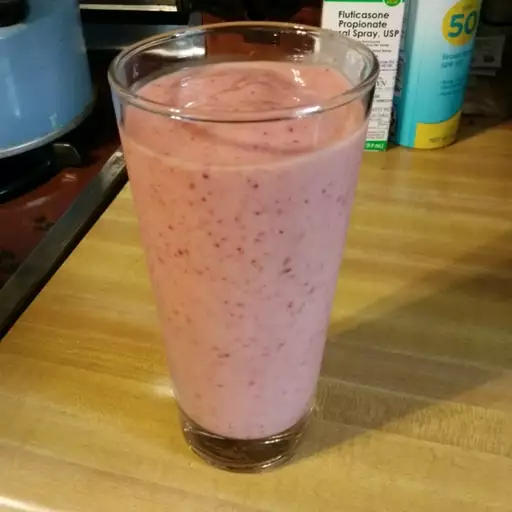

All-fruit Smoothie Recipe

Description
All-fruit Smoothies are thick, creamy beverage blended from puréed fruits, juices, yogurt, nuts, seeds, and/or dairy or nondairy milk.
Ingredients
- 1 cup pineapple juice
- 1 large banana, cut into chunks
- 1 cup frozen strawberries
- 1 cup frozen blueberries
Steps
- Pour pineapple juice into a blender and add banana, strawberries, and blueberries.
- Cover and blend until smooth, about 1 minute.
- Pour into 2 glasses.